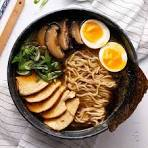

Home
Ramen Recipe

Description
Ramen is a Japanese noodle soup dish consisting of Chinese-style wheat noodles served in a flavorful broth, often topped with sliced meat, vegetables, and a soft-boiled egg.
Ingredients
- Ramen noodles
- Chicken or vegetable broth
- Sliced pork or chicken
- Soft-boiled egg
- Green onions
- Nori (seaweed)
- Optional: mushrooms, corn, bamboo shoots
Steps
- Bring broth to a gentle boil in a pot.
- Cook ramen noodles according to package instructions.
- Place cooked noodles in a bowl.
- Pour hot broth over noodles.
- Add sliced meat, soft-boiled egg, and vegetables.
- Garnish with green onions and nori, then serve hot.
More Recipes